Databus Multiplexer
This module is an integration of two circuits called "DataLatch" (TopPart) and "DataBridge" (BottomPart). After the whole chip was cracked, it became obvious that it is one circuit, just separated into two parts to reduce the length of wires.
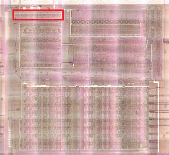 |
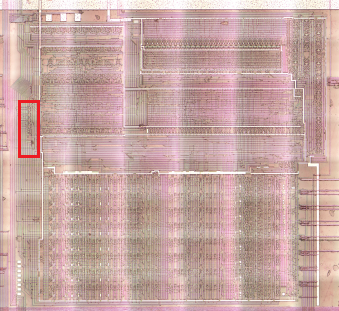 |
|---|---|
Please, if you want to understand correctly how this tricky circuit works, read the whole section carefully and take into account that this schematic was originally designed as two sections of the wiki, so the description is a bit "fragmented". The most correct and easiest to understand circuit is at the very end of the section.
Top Part
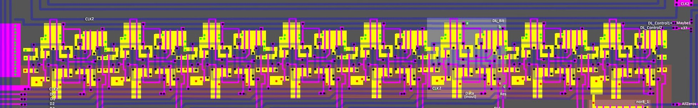
TopPart is used for the following operations:
- If the external databus (D[n]) is not floating (driven), load a value from it to the internal databus (DL), using transparent DLatch
- If the internal databus (DL[n]) is not floating (driven), load a value from it to the external databus (D), using transparent DLatch
- Connect the result from the ALU (Res[n]) to the internal databus (x37 = 1)
- Precharge internal databus (during CLK2=0)
Top Part Bit
TopPart consists of 8 such chunks:
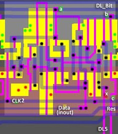
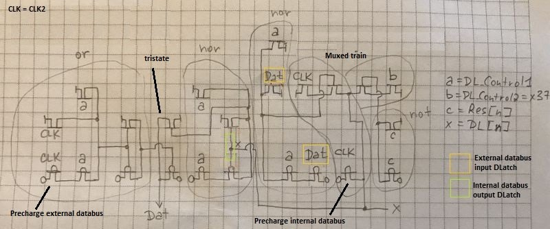
| Port | Dir | Description |
|---|---|---|
| a | input | DL_Control1. 1: Bus disable |
| b | input | DL_Control2 (x37). ALU Result -> DL |
| c | input | Result from ALU (Res[n]) |
| clk | input | CLK2 |
| Data | inout | External databus (D[n]) |
| x | inout | Internal databus (DL[n]) |
It looks like a mixture of dynamic CMOS logic, NMOS and regular CMOS.
A gate capacitance is used as memory.
Same thing by Gekkio: https://github.com/Gekkio/gb-research/tree/main/sm83-cpu-core/io-cell
Top Part Circuit analysis
External data bus driven (external->internal):
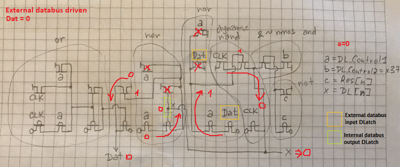 |
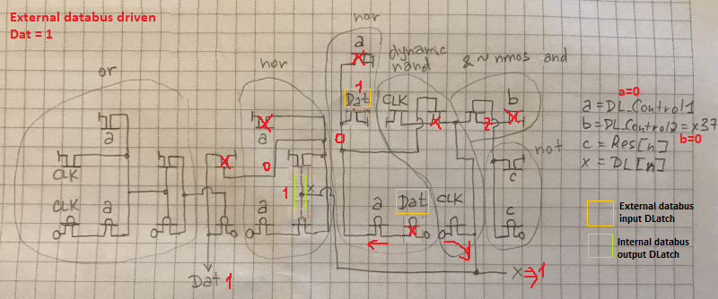 |
|---|---|
Internal data bus driven (internal->external):
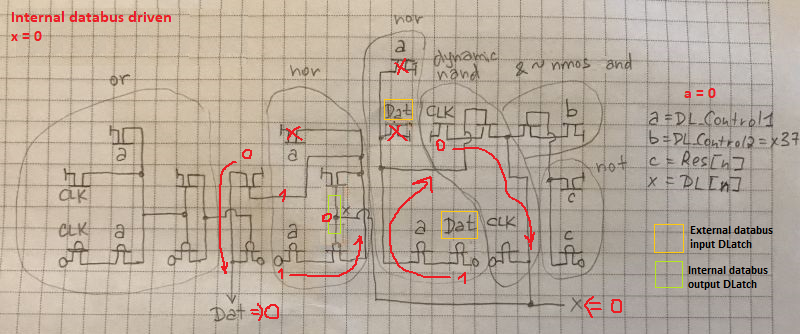 |
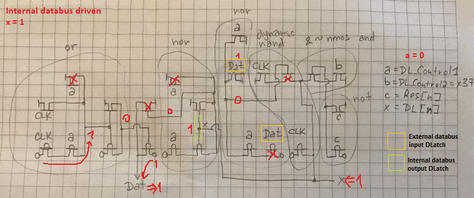 |
|---|---|
In all cases, both the internal and external data buses are precharged (value=0xff) during CLK2=0.
Top Part Logisim
The circuit is very low-level, with bidirectional signals and tristates made as FETs, so it is difficult to make an identical circuit in Logisim.
The closest approximation is following:
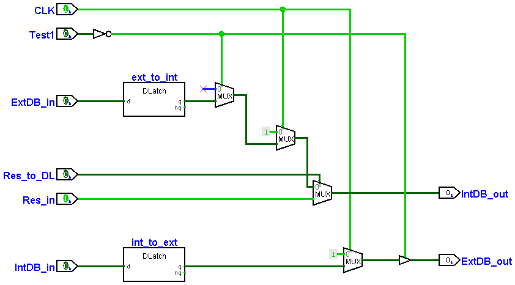
- For the external data bus, the tristate is on the output AFTER precharging; the value from the internal data bus is stored on the transparent DLatch (
int_to_ext) - The multiplexing of the external data bus and the ALU result can be thought of as a locomotive of MUXes:
- The leading mux selects between the connection of the internal data bus and the ALU result (x37 = 1)
- The next mux precharges the internal data bus if the ALU result is not required (since
Resis always driven signal). - The closing mux acts as tristate and disconnects the external data bus when Test1 = 1
- The value from the external data bus is stored on the transparent DLatch (
ext_to_int).
Bottom Part
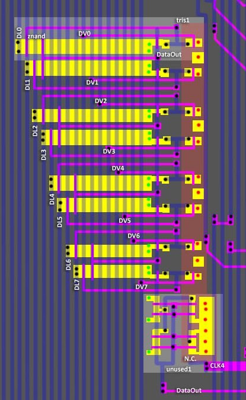
The purpose of this circuit is put DV bus value into DL bus.
The DV value also goes "through" the DataBridge and is fed to the ALU input (Operand2).
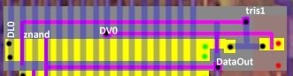
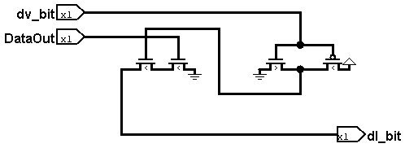
| DataOut | dv_bit | dl_bit |
|---|---|---|
| 0 | 0 | z |
| 0 | 1 | z |
| 1 | 0 | 0 |
| 1 | 1 | z |
Combined DataMux
If you combine the two circuits into one, then according to the latest data from our scientists, you should get something like this:
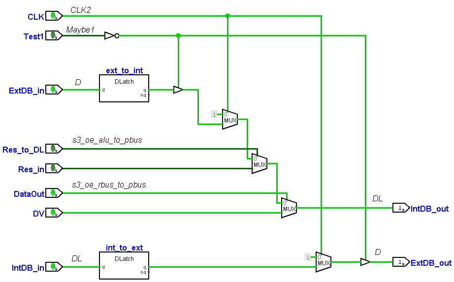
Again, Logisim doesn't support such tinkery, so here's a schematic closer to reality:
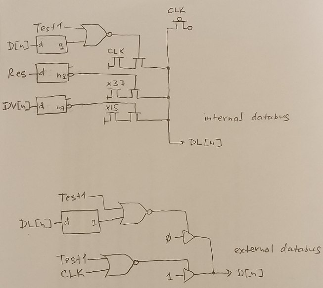